OneDrive
All documents in progress for your project MUST be uploaded to the shared OneDrive DoréLab under your respective folder.
This will help to monitor your progress. Do not hesitate to contact your colleagues or us with questions!
Zoom Meeting
How to send a calendar Zoom invite to Dr Doré or lab staff:
- Outlook calendar tab > New meeting/event > add Zoom meeting in the top bar before sending
VPN
UF VPN download: Here
myNCBI
How to get your weekly e-mail about: myNCBI: Here
You must enroll for myNCBI RSS feeds, which will notify you whenever a paper is published relevant to your inputted search terms.
Here is a video that goes more in-depth about how this function works.
Once completed, send the report you get once to Dr. Doré for approval.
How to Construct a Search
Boolean Operators
See this video
AND: Used to find results with both terms
OR: Used to find results with one of the terms
NOT: Used to exclude terms
“Term”: Used to define multiple words as a single term, e.g., “peanut butter” vs. “peanut” AND “butter
(): Used to separate one set of terms from another, similar to how they are used in a mathematical expression
Spelling: Use American AND British spellings of words like “haeme, haemorrhage, etc., because both can provide different results.
Inclusion: ALL results have to be included.
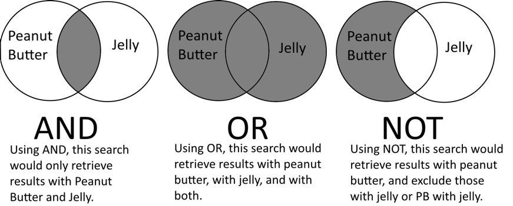
Databases and Search Engines
(Don’t forget to turn on your VPN first, see instructions below.)
Embase
PubMed
Google Scholar
PRIMO
Web of Science
Database: Dimensions
Dissertations & Theses Global
UpToDate
PROSPERO
Cochrane
US Patent Office Search
Embase
Description: International bio-medical literature
Topics/Subjects: Pharmacology and toxicology, General clinical medicine, Genetics, Biochemistry and molecular biology, Healthcare policy & management, medical specialties
Types/Formats: Journal articles
Dates: 1947-present (This 1947 should be included in all your Method Sections of your reviews)
PubMed
Description: Pubmed helps view the papers that have cited the document retrieved initially in the search
Topics/Subjects: Biomedicine, Clinical Medicine, Rehabilitation, Health Education, Health Administration, Health Services, Nutrition, Delivery of Healthcare, Pathology, and Psychiatry
Types/Formats: Journal articles
Dates: 1966-present
More: PubMed
Google Scholar
Description: A search interface for scholarly literature, patents, and case law. It crawls sources, including webpages from academic publishers, professional societies, online repositories, universities, etc.
Topics/Subjects: Broadly multidisciplinary
Types/Formats: Articles, theses, books, abstracts, court opinions, case law, and patents
Dates: Most content is from 1995 to the present,
More: G Scholar SOP
PRIMO
Description: It covers everything from the former UF OneSearch, i.e., everything that UF libraries subscribe to or have in the print and electronic collections. Topics/Subjects: All subjects were collected by the university.
Types/Formats: All formats: books, ebooks, journals, ejournals, and videos
Dates: From the mid-1900s to present
More: PRIMO SOP
Web of Science
Description: Consists of 3 databases (in sciences, social sciences, and arts & humanities) that cover journals or primary literature.
Topics/Subjects: Covers 164 scientific disciplines, including biomedical sciences, natural sciences, engineering, computer science, and data sets
Types/Formats: Journal articles, conference proceedings, books, and book chapters.
Dates: Sciences: 1900-present
More: Web of Science SOP
Dimensions
Description: Research analytic database that covers more than 1.5 billion citations, supporting grants, datasets, clinical trials, patents, and policy documents
Topics/Subjects: All disciplines, STEM focus.
Types/Formats: Journals, preprint servers, books, grants, datasets.
Dates: Some data going back to 1665
More: Dimensions
Dissertations & Theses Global
Description: An interdisciplinary collection of dissertations and theses from around the world
Topics/Subjects: Arts, Education, Humanities, Social Sciences, Behavioral Sciences, Natural Sciences, Health & Medical Sciences
Types/Formats: Dissertations and theses. Includes both citations and full text.
Dates: 1743 to the present, with citation coverage dating back to 1637
UpToDate
Description: Latest about current therapies (consulted by MDs daily)
Check if some info should be relevant and updated in your Discussion.
More: UpToDate
PROSPERO
Description: NIHR fast-tracking registration of protocols and systematic reviews related to COVID-19
At least include this search
Topics/Subjects: https://www.crd.york.ac.uk/prospero/
More: PROSPERO
Cochrane
Description: https://www.cochranelibrary.com/central/about-central
More: Cochrane
US Patent Office Search
Description: Search interface for the US Patent Office database.
Topics/Subjects: All disciplines
Types/Formats: Registered patents, PDF images with text
Dates: Patents from 1970 to present
More: US Patent Office Search
Clinical Trial Registries
The 24 clinical trial registries that are national, regional, or international in scope are listed below, along with relevant laws and guidance documents. Some, such as the WHO Search Portal and the Canadian Clinical Trial Database, are not technically classified as a “registry,” but are included in this Listing for the purpose of comprehensiveness. Registries that are recognized by the International Committee of Medical Journal Editors are indicated with an asterisk: *
United States
Registry: Clinicaltrials.gov
Description: National registry of clinical trials occurring in the United States.(Dates:2008 to present)
Legislation: Food and Drug Administration Modernization Act, Section 113 (1997), Food and Drug Administration Amendments Act, Section 801 (2007)
Guidelines:National Library of Medicine: FAQs on ClinicalTrials.gov , Food and Drug Administration: Guidance for Industry: Information Program on Clinical Trials for Serious or Life-Threatening Diseases and Conditions (2004), Department of Veterans Affairs: FAQ
Canada
Registry: Health Canada Clinical Trial Database
Guidelines:Tri-Council Policy Statement: Ethical Conduct for Research Involving Humans, Article 11.3
European Union
Registry: EU Clinical Trials Register
Description: European registry of clinical trials occurring in European countries.(Dates: 2011 to present)
Legislation: Clinical Trials Regulation No. 536/2014, Article 81
Guideline: FAQs
Germany
Registry: German Clinical Trials Register
Guideline: FAQs
Netherlands
Registry: Netherlands Trial Register (Dutch)
Switzerland
Registry: Swiss National Clinical Trials Portal
Legislation: Federal Act on Research Involving Human Beings, Articles 56, 64,65, and 67 (2011)
Guideline: FAQs
United Kingdom
Registry: ISRCTN *
Legislation: Health Research Authority: Transparency, Registration, and Publication
Guideline: ISRCTN: FAQs
Australia
Registry: Australian New Zealand Clinical Trials Registry*
Legislation: National Statement on Ethical Conduct in Human Research, 3.3.12 (2014)
Guideline: FAQs
China
Registry: Chinese Clinical Trial Registry
Guideline: FAQs
India
Registry: Clinical Trials Registry
Legislation: Office of Drugs Controller General: Registration of Clinical Trial in ICMR Clinical Trial Registry
Guideline: Clinical Trials Registry – FAQs
Iran
Registry: Iranian Registry of Clinical Trials
Guideline: FAQs
Japan
RegistryJapan Primary Registries Network
Description: Japanese registry of clinical trials.(Dates:2008 to present)
Guideline: FAQs (Japanese)
Korea
Registry: Clinical Research Information Service
New Zealand
Registry: Australian New Zealand Clinical Trials Registry
Guideline: FAQs
Philippines
Registry: Philippine Health Research Registry
Guideline: FAQs
Sri Lanka
Registry: Sri Lanka Clinical Trials Registry
Guideline: FAQs
Thailand
Registry: Thai Clinical Trials Registry
Guideline: FAQs
Brazil
Registry: Brazilian Clinical Trials Registry
Guideline: FAQs
Cuba
Peru
Registry: Peruvian Registry of Clinical Trials
Pan Africa
Registry: Pan African Clinical Trials Registry
Guideline: FAQs
South Africa
Registry: South African National Clinical Trials Register
Guideline: FAQs
Tanzania
Registry: Tanzania Clinical Trial Registry
Guideline: FAQs
WHO International Clinical Trials Registry Platform
Registry: WHO International Clinical Trials Registry Platform
Description: International registry of clinical trials occurring worldwide. Sponsored by the World Health Organization.
Topics/Subjects: All of biomedicine; anything using an interventional trial for clinical purposes.
Dates: Varies according to country
More on Registry Platform
Guidelines when working and filling a literature review chart
NEVER COPY AND PASTE PUBLISHED CONTENT – THIS IS PLAGIARISM AND CAN BE A REASON FOR A LAWSUIT
Excel Project
There should be three tabs in your excel project: preclinical research, clinical research, and LEGEND (including a list of your searches [listing out specific terms and what search engine was used], all abbreviations/acronyms, and what they stand for, citations for systematic review papers, and any other information that helps organize your table).
Table 1: Role of xxxx in yyy from preclinical studies.
|
Reference and study design |
Avg. Age and Age Range, Species, Sample Size, Sex |
Model Used |
Drugs Administered, dosage, administration, duration |
Anatomical Outcomes |
Functional Outcomes |
1-Summarize each paragraph of the Discussion using bullets for each. 2-Include Limitations and future directions |
|
Ref should also be inserted using Sciwheel; |
Some groups may report weight (kg) rather than age |
Be specific about what experimental model was used Ex: for an ischemic stroke study using tMCAO state: “tMCAO administered for 30sec” |
Ex: DMF, MMF, tPA, etc. NOT anesthetics unless the study focuses on outcomes following the usage of anesthetics
Include the time the drug was dozed and dosage and survival time/endpoint |
INCLUDE ALL NEG data when it is relevant to your study |
|
Include 1 sentence summarizations of each paragraph in the paper’s Discussion List limitations and comments referring to future directions for similar studies and how they can improve. |
|
Hatakeyama T et al. (2013).42 Deferoxamine reduces neuronal death and Hematoma lysis after Intracerebral hemorrhage in aged rats. |
18mo Fischer 344 rats n=78 100% M |
100μl of autologous whole blood from right femoral artery was injected into the right basal ganglia at a rate of 10μl/min |
deferoxamine (DFX), 100mg/kg administered intramuscularly 2h post-injection followed by 12h intervals for up to 7d Rats euthanized 1, 3, or 7d |
|
|
MF: “Only males”
Authors: The study did not included the xxxx |
Table 2: Role of xxxx in yyy from clinical studies
|
Reference & study design |
Avg. Age, Pop. Size, Sex, Duration, Location |
Drug, Dosage, Administration & Time Dependence |
Anatomical Outcomes |
Functional Outcomes |
Limitations and future directions |
Comments |
|
Ref should also be inserted using Sciwheel;
Note the study design in the last line (prospective, cohort, double-blind, etc.) |
Include n=xxx for each subgroup of the study
|
Types of administration: IV, IP, IM, PO, etc. Once or was it daily? Continuous? Start/stop? |
|
|
(Last columns are to help YOU, they will not be in your final table) |
Here, add one sentence summary for each paragraph of the Discussion, then include |
|
Yu, Y., et al. (2015) The clinical effect of Deferoxamine Mesylate on edema after Intracerebral hemorrhage.
(Retrospective) |
64.2yr (drug) n=36 68% M 60.1yr (control) n=42 75% M 02/13-05/14 Mancheng, China |
Deferoxamine mesylate 32mg/kg IV, no more than 7.5mg/kg/h & 6000mg/d for 3d |
|
|
Small sample size Little variability in hematoma volume Need to explore the best window for drug administration Need to investigate dose dependence & varying drug regimen |
|
How to read, summarize, and note publications when building your table
Start by reading the last paragraph of the introduction and the first paragraph of the Discussion of whatever paper you find to ensure it is relevant to your topic! Only include evidence that is relevant to your topic; you may not need to include ALL values and conclusions.
Confidence Intervals
- Presenting relevant confidence intervals will increase the validity of your paper, along with p-values!
- On this same note: NON-SIGNIFICANT data is very important and should also be included in your tables!
- For students including original data, follow STAIR and ARRIVE criterion
- ARRIVE pdf guidelines
Increased/Decreased Expression
When listing “increased/decreased expression”, you must specify a few things: - Where has the expression changed? Is it on a cell type or in the blood, etc.? - Is the expression changed in mRNA transcription or protein translation?
Adding more columns
You can add columns if they pertain to your topic and provide relevant information to the table.
Ex: Stroke Type column—put before outcome columns: When mentioning stroke type, make sure to include the stroke model and when the animal was sacrificed (this information would be put in the Model Used column)
Ischemic:
- For tMCAO (transient), you need to include how long the occlusion was done and how long was the survival
- Ex: tMCAO 30min + Reperfusion 22hr, 7d survival
- For pdMCAO (permanent distal)
- Ex: Suture or electro catheter
Hemorrhagic:
- For ICH, give the exact type and injection location (mention if double injections)
- Ex: 20ul stroma free-Hb injected into the striatum, 20ul autologous blood injection, 2ul collagenase injection (Type IV)
- For SAH, give the exact type and injection location
- Ex: Autologous injection (100μl) into the cisterna magna
Traumatic Brain Injury (TBI)
Control cortical injury (CCI), pneumatic or electromagnetic
Contusion/closed head injury (CHI)
Fluid percussion injury
Blast model
CAMERA model
Study Design
For study design, make sure to include whether or not it was randomized or blinded and whether it is prospective or retrospective Reference for delineation of each design type.
Patient Populations
When referring to patient populations – be sure to clarify what group they were a part of, experimental or control
Sample Groups
For sample groups, separate the features of subgroups (i.e., those with a given clinical diagnosis or a knockout genotype mouse) using separate rows within a cell. This can be done by inserting a line break within a cell with Alt(or Option)+Enter on your keyboard
N/D Cells
For any cells where you could not find the information corresponding to the heading, use N/D (not determined) rather than N/A (not applicable); for most boxes
Spell Check
For all tables, be sure to always run Spell Check (Tools>Spelling>Spell Check) or Grammarly regularly and before presenting the chart.
Table Formatting
It would be best if you always used these abbreviations in your table.
- Year = yr
- Day = d
- Hour = hr
- Week = wk
- Month = mo
- Male = M ; Female = F
- Always list counts of subjects as “n=xxx”
Font Size
- You may need to use a smaller font size (9 or 10 pt)
- TO CREATE A NEW LINE IN A CELL: Opt+Enter
- You should “freeze” the header rows on your tables by highlighting the row and selecting View>Freeze panes>Top row
Resize columns and rows
Resize columns and rows to content under Home (shown below)
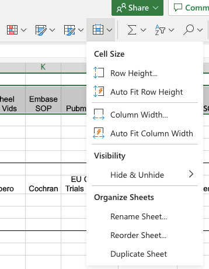
Remove Extra Spaces and Lines
- Tables should not contain any extra spaces or lines
- All cells should be text-wrapped (icon shown below)
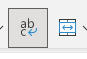
Use hyphens throughout your content-heavy columns, as bullet points are not an option in sheets
Define all used acronyms and abbreviations on your Legend tab
p-values and Other Decimals
- Within your table, p-values and other decimals should be written without extra space and without implied integers
- p=.0024 rather than p = 0.00240
- All values should have valid units with correct symbols
Specific Title
- Tables should be given a specific title that summarizes their purpose when inserted into the manuscript
- When pasting tables into a Word document or Google Docs, make sure that you turn on keep lines together
- Format > Line & Paragraph Spacing > Keep Lines Together.
- All squared, cubic, etc. digits should be inserted correctly
- Example: 24 cubic millimeters = 24 mm3
- Highlight characters > right click > font > super/subscript
Super/Subscript
- All ionic positive and negative signs on elements should be superscripted
- Example: potassium ion = \(K^+\)
- Highlight characters > right click > font > super/subscript
- Do not use spelled out version of Greek letters, instead use the equation or special character function
- Examples: \(\beta\) for beta, \(\kappa\) for kappa, \(\alpha\) for alpha, amyloid beta should be written as \(A\beta\), etc.
Special Character
- Instead of writing \("+/-"\) also use the equation or special character function for \(\leq\), \(\pm\), etc.
- Spell out all reasonable numbers throughout your manuscript, but use only digits within your table
Inserting Excel Table
For inserting your completed Excel table into a Word document once in the writing stage, follow these instructions to insert it horizontally.
On Microsoft Word:
Layout Tab > Page Setup group > Breaks > Section Breaks > Next Page
Insert your table into the blank page
Format > Page orientation > Landscape
Using Word
Using WORD: How do I insert a section break between portrait and landscape?
You can manually add the same type of section break whenever you want to change the layout or formatting of a page or pages by going to the PAGE LAYOUT tab and clicking Breaks. Then, go down to Section Breaks and click Next Page.
Manuscript Proofreading Edits
These edits must be made before sending your paper to Dr. Doré and our editors
Key Points for Writing
- ALL references should be added to your Sci Wheel shared folder (not personal), and attach the PDF if you have access to it
- Abstracts and keywords should be left to decide until the majority, if not all, of the manuscript, is drafted
- Manuscript table content should be as condensed and directly relevant as possible (omit extra zeros and spaces)
- Outcomes within your landscape-inserted (SOP below) table should be bullet-pointed
References
- References listed within an inserted table should be in the following format:
- “Insert author et al. (2022) Insert title.”
- In-line citations and complete references should be inserted using the Sci Wheel drive add-on, and the references should be at the end of the document
- Style of citations varies by journal
Original Figures
- At least 2 original figures are preferred; resources listed below
- One shows the general mechanism
- One showing outcomes
Final Revision
- Allow at least 2 weeks for final revisions, as edits will be requested by both Dr. Doré and the department editor before the paper can be submitted to any journal
- To compare two docs in Word: open Word first, then click on Compare, then you upload one paper, and upload the other paper – and Voila!
Basic Formatting for Drafts (11x8.5)
- PLEASE LOOK AT THE INSTRUCTION TO AUTHORS FOR YOUR SELECTED JOURNAL
- Also, download a PDF example of a recent article from the journal and look at the formatting.
- In the absence of this, use the rules below.
Font and Margin
- 11 pt black font everywhere in Times New Roman unless instructed otherwise by a journal
- If tables are too large, you may decrease the font size within them by 1 or 2 pts
- 0.5 margins on all sides
- The entire paper should be single-spaced
- Bold type your figure heading and subsections
- Center your article title
Affiliation
- Copy and paste the following affiliations in addition to any other authors with varying affiliations at the top of your paper:
- Volunteers should be with the “\(^1\)Department of Anesthesiology, Center for Translational Research in Neurodegenerative Disease, University of Florida College of Medicine, Gainesville, FL, USA.”
- Dr. Doré should be associated with the above affiliation as well as the “\(^2\)Departments of Pharmaceutics, Psychology, and Neuroscience, McKnight Brain Institute, University of Florida College of Medicine, Gainesville, FL, USA.”
- At the very least, your author section should include: Your names\(^1\) and Sylvain Doré\(^1\),\(^2\) but suggested reviewers will be added.
Idention
- Indent every first line, preferably custom, as the default tab takes up a large amount of space
References
- ALL references must be inserted using the Sci Wheel browser extension/Google add-in; titled “References.”
- Every reference should contain the year of publication and the volume and page numbers that were accessed in your search
- These numbers will be at the end of each reference and look like this: “2012, 91, 1451–1458
- Check every single reference one by one before sending a draft to Dr. Doré
Superscripting
Highlight text > right click > font > super/subscript
- All squared, cubic, etc. digits
- \(FeCl2\) = \(FeCl_2\)
- 24 cubic millimeters = 24 \(mm^3\)
- All ionic positive and negative signs - Example: potassium ion = \(K^+\)
Special Characters
- Do not use spelled out version of Greek letters, instead use the equation or special character function
- Examples: \(\beta\) for beta, \(\kappa\) for kappa, \(\alpha\) for alpha
- Amyloid beta should be written as \(A\beta\)
- Examples: \(\beta\) for beta, \(\kappa\) for kappa, \(\alpha\) for alpha
- Instead of writing “\(+/-\),” also use the equation or special character function for \(\leq\),\(\pm\) , etc.
- Spell out all reasonable numbers throughout your manuscript, but only use digits within your table
Capitalization
- Medications, agents, molecules and ions, proteins, etc., usually do not need to be capitalized throughout an entire paper
- There are many scientific elements named after people; those names should be capitalized
- Examples: Cresyl violet, Evan’s blue, etc.
- All author names and search engines should be capitalized
Decimals and Sig Figs
- Within your manuscript, p values and other decimals should be written with the 0, if applicable
- p = 0.0024
- Within your table, p-values and other decimals should be written without extra space and without implied integers
- p=.0024
Abbreviations and Keywords
- Unless instructed otherwise, use all acronyms and abbreviations
- Examples: BBB, SAH, SCI, ICH, ROS, Ab, IL, Hpx, HP, etc.
- ALWAYS define these abbreviations first and then use parentheses the first time you use them in your manuscript and keep track of them in your abbreviations section
- “The blood-brain barrier (BBB) is important because….”
- You should have at least 6 keywords, in alphabetical order, that are not already mentioned in your title
Figures (At least 2 per manuscript)
- All original figures should be downloaded from your chosen figure software in 300 dpi to ensure it is clear when uploaded to portals
- Some software, like InkScape, will allow you to export high-resolution images for free, while others, like BioRender, require a paid subscription for this feature. The lab does have a paid student account for BioRender for this reason, and there is a calendar to coordinate sign-ins, as only one user is permitted to use the account at a time
- You will need to check the box in BioRender for publication license when exporting your figure (File>Export (300 dpi)) and cite BioRender in your Acknowledgements like this: “Figures were created using BioRender.com.”
- Figure ideas should be discussed directly with Dr. Dore
- All figures should be as condensed as possible; more space costs publishers more money!
- If using PowerPoint to create your figures, refer to the instructions below
The Finished Example
SEE THE FINISHED, FORMATTED EXAMPLE BELOW
It must include: the Cover Letter, Suggested Reviewers Page, Title Page, and content for the last page of your manuscript.
Resolution of Powerpoint
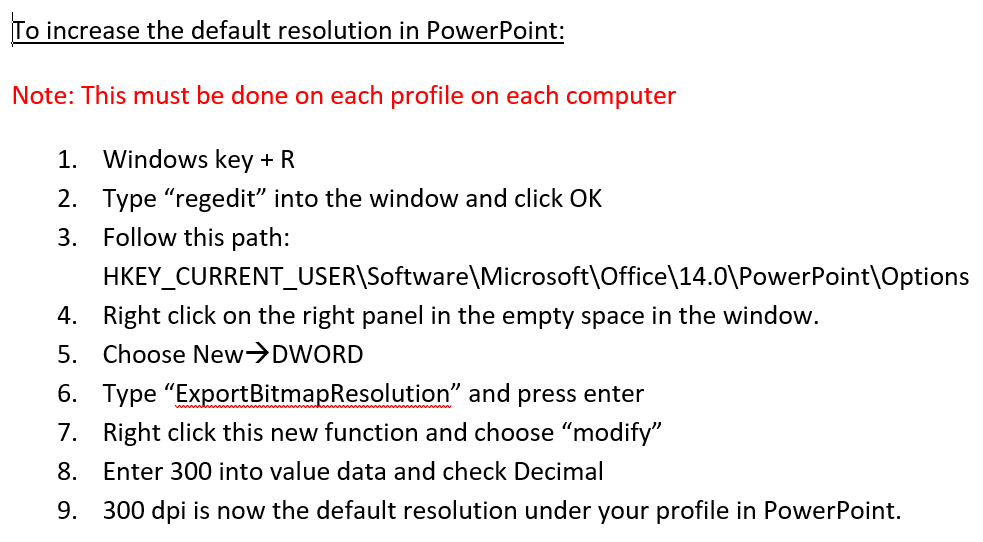
File Compression
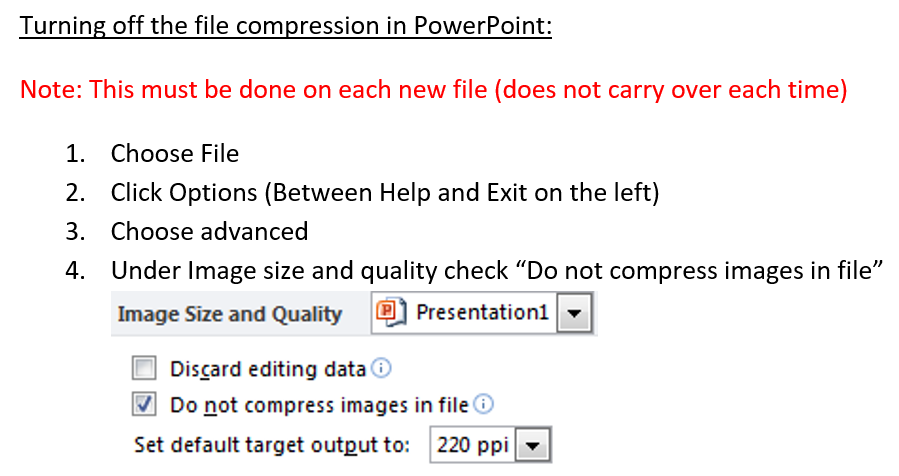
Tracking your Onboarding Process
- This should be pasted in your tables on the Legend tab and updated with the dates you completed each task
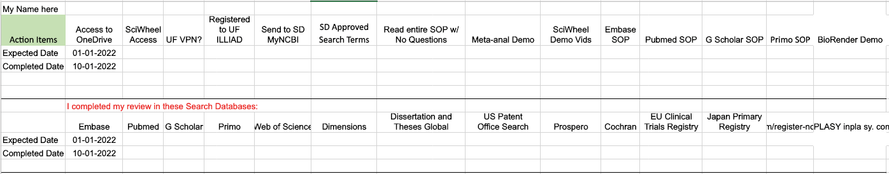
Journal Selection and Submission (Ask SD/Olivia)
- Once you have reviewed all SOP sections, send your manuscript to Dr. Doré for a first round of edits
- Once you receive these edits, make changes using the Suggesting (G Drive)/Track Changes (Word) feature and Reply to all of his comments without removing them from the document
- Use Clarivate to compile a list of possible relevant journals
Clarivate
- Useful for Impact Factor ONLY
- InCites Journal Citation Reports
- Citation metrics for journals indexed in the Science - Citation Index Expanded and Social Sciences Citation Index
- STEM and social/behavioral sciences
- Citation data includes impact factor and H index
- JCR calendar year is from January to December.
Communications and Publishing Office
All manuscripts must be sent to the Communications and Publishing Office before being submitted to a journal. The C&P Office will run your paper through iThenticate to check for plagiarism, edit and format the paper, and assist with submission if requested. All UF Anesthesiology journal submissions must be run through the Communications and Publications Office before submission for this screening. This includes student submissions, and work initiated at another institution. If you plan to submit a manuscript to an open access journal or to a journal that has an article processing charge (APC), you must first send your request to Christina Hendricks, Manager, Communications and Publishing. The C&P Office has a yearly budget to pay for some APCs but not all. It is imperative that they know about these charges before you submit. They will not pay for the charges after you’ve submitted and received a bill if you have not received approval first. If you have any additional questions, please feel free to email Christina at chendricks@anest.ufl.edu or me at Enneking@ufl.edu.” 11/14/22
Submission and Correspondence
- Submission and correspondence to publishers and editors should all be made with Dr Dore’s e-mail address, DO NOT use a personal login for this process
- If you have not heard back from the editor 6 weeks after submission, meet with Dr. Dore and plan on contacting them for an update on your manuscript.
- Once you have received comments back from the editors, you should make these changes with replies and re-submit within 2-3 weeks. If you are not prompt with these requested changes, you may lose your offer in the journal.
A finished example of how your FIRST PAGE should look
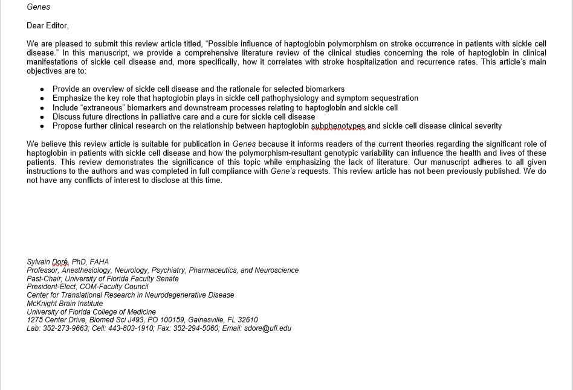
THE SECOND PAGE
THE SECOND PAGE is for suggested reviewers: (Provided by Dr. Dore), but you should complete the info about their.
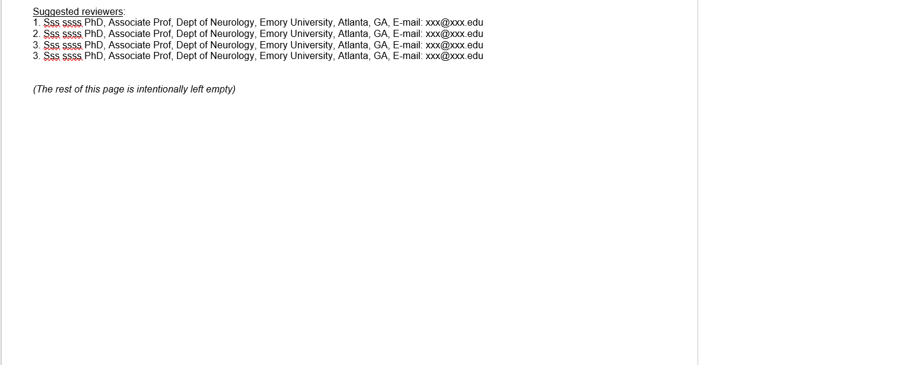
Title Page
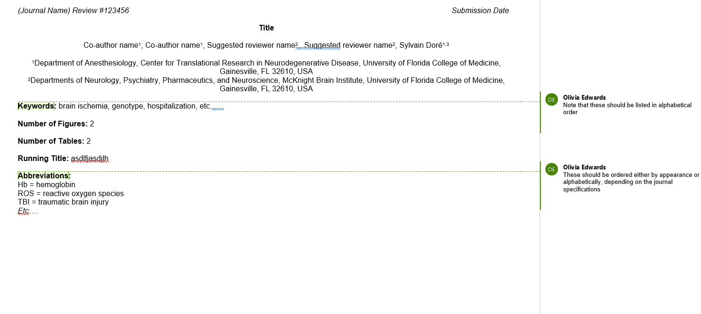
Abstract
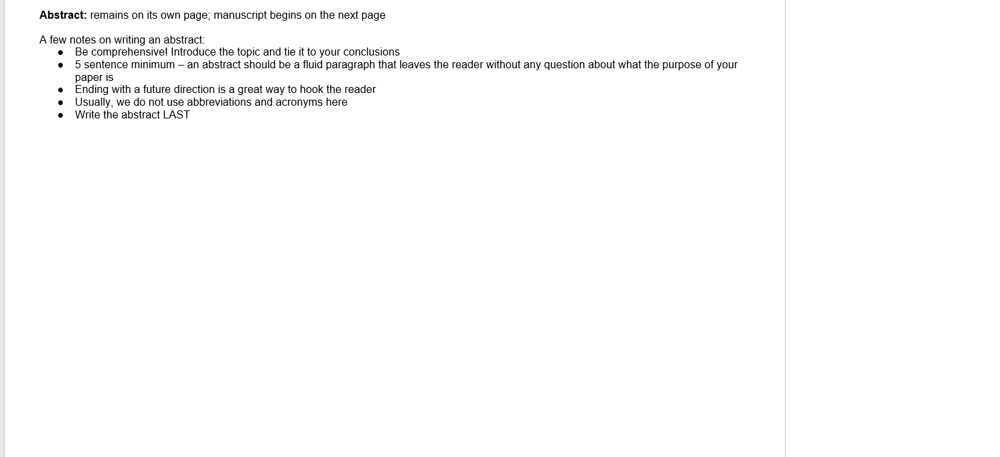
Finished Example
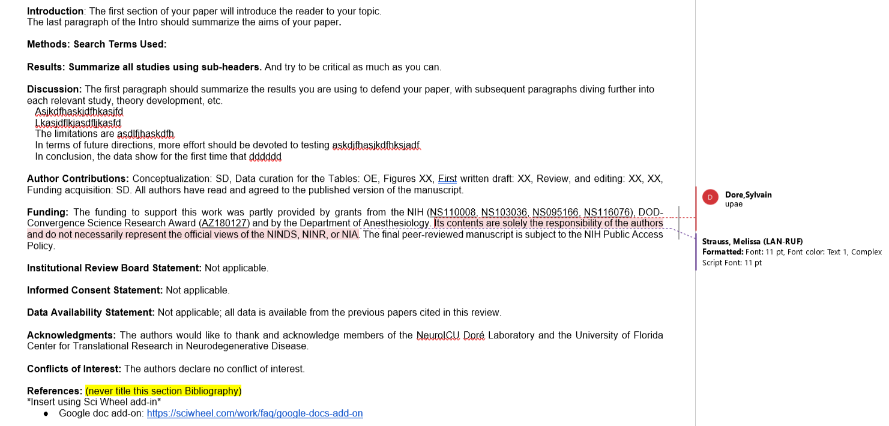
Extra Tools
- Connected Papers – Network graphic connecting related papers
- Scholarly – AI summaries of academic papers
- Scite - Finds related citations and classifies their use in the article
- ILLiad – Does the UF Library system not have it? Our librarians can get it for another library for you!
- Please save the copy you receive to shared folders, so we can all access it!
- Sci-Hub – If the paper is still restricted with the UF ILLIAD, you can look up the title with Sci-Hub. The website may be able to pull up a VPN
- Speechify – Not really a literature review tool per se, but it converts text to audio so that you can listen to published papers in your lit search
- AdisInsight – Updated drug and disease search tool
Zoom screen sharing auto setting
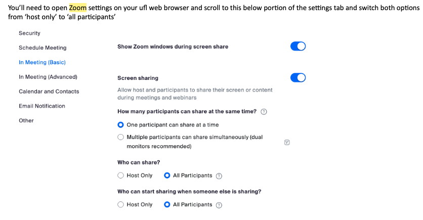
Manuscript Prep Guidance
- Journal of Neurotrauma has provided a video series detailing how to prepare variations of scientific manuscripts and their review process
- Link here
Figure Prep
- BioRender - One of the best software for illustration. Our lab has a premium subscription.
- E-mail lab staff for more information on how to use it, etc
Figure Tools
- SciDraw.io – Easy to cite scientific images. ● Lucidchart – Free browser-based illustrator, easy to use. The free version is suitable for flow charts.
- Inkscape – Free downloadable software.
- Diagrams
- SMART Medical Art - 3000 free scientific images available for figure illustrations
Chemical Structures
- ChemSketch - Free downloadable software. Limited in its capacity to draw coordination of ions, but excellent for organic molecules.
- ChemSpace - Browser-based. Simple and easy to use.
- PubChem Sketcher - Browser-based. More difficult to use but includes many premade moieties.
This table is to aid you in writing each section of your manuscript. However, take this with a grain of salt, as it is more in-depth for some areas than we usually require
The Sections of a Manuscript
|
Section and Topic |
Item # |
Checklist item |
|
TITLE |
||
|
Title |
1 |
Identify the report as a systematic review at the top of the paper. |
|
INTRODUCTION |
||
|
Rationale |
3 |
Describe the rationale for the review in the context of existing knowledge and literature. |
|
Objectives |
4 |
Provide an explicit statement of the objective(s) or question(s) the review addresses. |
|
METHODS |
||
|
Eligibility criteria |
5 |
Specify the inclusion and exclusion criteria for the review and how studies were grouped for the syntheses. |
|
Information sources |
6 |
Specify all databases, registers, websites, organizations, reference lists, and other sources searched or consulted to identify studies. Specify the date when each source was last searched or consulted. |
|
Search strategy |
7 |
Present the full search strategies for all databases, registers, and websites, including any filters and limits used. |
|
Selection process |
8 |
Specify the methods used to decide whether a study met the inclusion criteria of the review, including how many reviewers screened each record and each report retrieved, whether they worked independently, and, if applicable, details of automation tools used in the process. |
|
Data collection process |
9 |
Specify the methods used to collect data from reports, including how many reviewers collected data from each report, whether they worked independently, any processes for obtaining or confirming data from study investigators, and, if applicable, details of automation tools used in the process. |
|
Data items |
10a |
List and define all outcomes for which data were sought. Specify whether all results that were compatible with each outcome domain in each study were sought (e.g., for all measures, time points, analyses), and if not, the methods used to decide which results to collect. |
|
10b |
List and define all other variables for which data were sought (e.g., participant and intervention characteristics, funding sources). Describe any assumptions made about any missing or unclear information. |
|
|
Study risk of bias assessment |
11 |
Specify the methods used to assess the risk of bias in the included studies, including details of the tool(s) used, how many reviewers assessed each study and whether they worked independently, and if applicable, details of automation tools used in the process. |
|
Effect measures |
12 |
Specify for each outcome the effect measure(s) (e.g., risk ratio, mean difference) used in the synthesis or presentation of results. |
|
Synthesis methods |
13a |
Describe the processes used to decide which studies were eligible for each synthesis (e.g., tabulating the study intervention characteristics and comparing against the planned groups for each synthesis (item #5)). |
|
13b |
Describe any methods required to prepare the data for presentation or synthesis, such as handling missing summary statistics or data conversions. |
|
|
13c |
Describe any methods used to tabulate or visually display the results of individual studies and syntheses. |
|
|
13d |
Describe any methods used to synthesize results and provide a rationale for the choice(s). For example, if a meta-analysis was performed, describe the model(s), method(s) to identify the presence and extent of statistical heterogeneity, and software package(s) used. |
|
|
13e |
Describe any methods used to explore possible causes of heterogeneity among study results (e.g., subgroup analysis, meta-regression). |
|
|
13f |
Describe any sensitivity analyses conducted to assess the robustness of the synthesized results. |
|
|
Reporting bias assessment |
14 |
Describe any methods used to assess the risk of bias due to missing results in a synthesis (arising from reporting biases). |
|
Certainty assessment |
15 |
Describe any methods used to assess certainty (or confidence) in the body of evidence for an outcome. |
|
RESULTS |
||
|
Study selection |
16a |
Describe the search and selection process results, from the number of records identified in the search to the number of studies included in the review, ideally using a flow diagram. |
|
16b |
Cite studies that might appear to meet the inclusion criteria but which were excluded, and explain why they were excluded. |
|
|
Study characteristics |
17 |
Cite each included study and present its characteristics. |
|
Risk of bias in studies |
18 |
Present assessments of risk of bias for each included study. |
|
Results of individual studies |
19 |
For all outcomes, present, for each study: (a) summary statistics for each group (where appropriate) and (b) an effect estimate and its precision (e.g., confidence/credible interval), ideally using structured tables or plots. |
|
Results of syntheses |
20a |
Briefly summarize each synthesis's characteristics and risk of bias among contributing studies. |
|
20b |
Present results of all statistical syntheses conducted. If meta-analysis was done, present for each the summary estimate and its precision (e.g., confidence/credible interval) and measures of statistical heterogeneity. If comparing groups, describe the direction of the effect. |
|
|
20c |
Present results of all investigations of possible causes of heterogeneity among study results. |
|
|
20d |
Present results of all sensitivity analyses conducted to assess the robustness of the synthesized results. |
|
|
Reporting biases |
21 |
Present assessments of risk of bias due to missing results (arising from reporting biases) for each synthesis assessed. |
|
Certainty of evidence |
22 |
Present assessments of certainty (or confidence) in the body of evidence for each outcome assessed. |
|
DISCUSSION |
||
|
Discussion |
23a |
Provide a general interpretation of the results in the context of other evidence. |
|
23b |
Discuss any limitations of the evidence included in the review. |
|
|
23c |
Discuss any limitations of the review processes used. |
|
|
23d |
Discuss the implications of the results for practice, policy, and future research. |
|
|
OTHER INFORMATION |
||
|
Registration and protocol |
24a |
Provide registration information for the review, including the register name and registration number, or state that the review was not registered. |
|
24b |
Indicate where the review protocol can be accessed or state that a protocol was not prepared. |
|
|
24c |
Describe and explain any amendments to the information provided at registration or in the protocol. |
|
|
Support |
25 |
Describe sources of financial or non-financial support for the review and the role of the funders or sponsors in the review. |
|
Competing interests |
26 |
Declare any competing interests of review authors. |
|
Availability of data, code, and other materials |
27 |
Report which of the following are publicly available and where they can be found: template data collection forms; data extracted from included studies; data used for all analyses; analytic code; any other materials used in the review. |
Introduction to SciWheel
- Video Guide Series
- Zoom training sessions - required
Color Coding Your Notes
When highlighting references using the browser extension, keep to this color legend to make it easier for you to find your notes when you begin writing your manuscript
- Red = Anatomical outcomes
- Orange = Functional outcomes
- Yellow = Methods
- Blue = Study limitations
- Green = Descriptive parameters
- Pink/purple = Treatment
Getting Started – Installing the Chrome Browser Extension
- Start by navigating to https://sciwheel.com/
- Create a New Account using your @ufl.edu or Sign In
- Ask a senior lab member to be invited to the Dore Lab group
- Once you reach your Dashboard – navigate to the Tools.
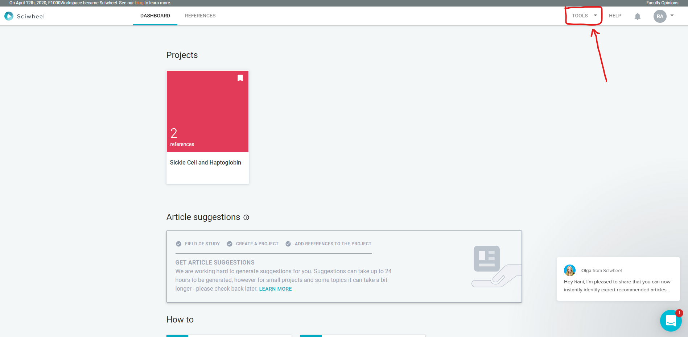
- Click “Chrome extension” then “Install Sciwheel for Chrome.” You will then see the extension next to your address field on Chrome
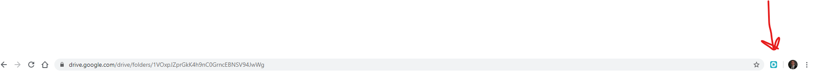
Navigate back to the Dashboard page – return to Tools, and click “Word plugin and desktop app.”
- Close Word if open, allow installation to continue, and you will then see a Sciwheel tab on your Word “Ribbon.”
Importing References
- When viewing a scholarly publication, click the Sciwheel button noted above – a few options will appear
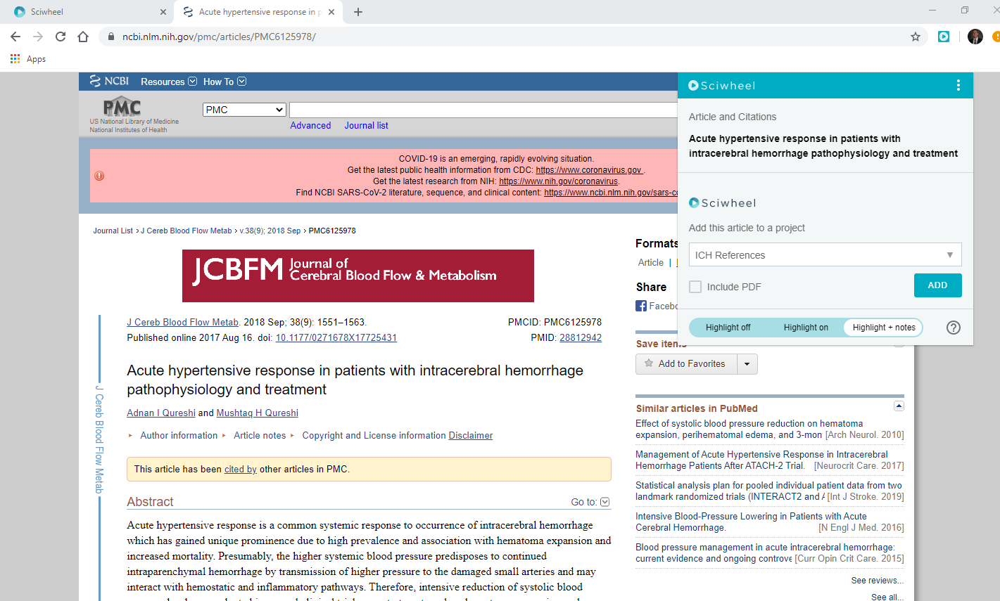
- At this stage, you can add it to a project – typically, you would navigate to your project folder on the shared Dore Lab group. For this example, I’ll be adding it to a folder titled “ICH References,” as seen above
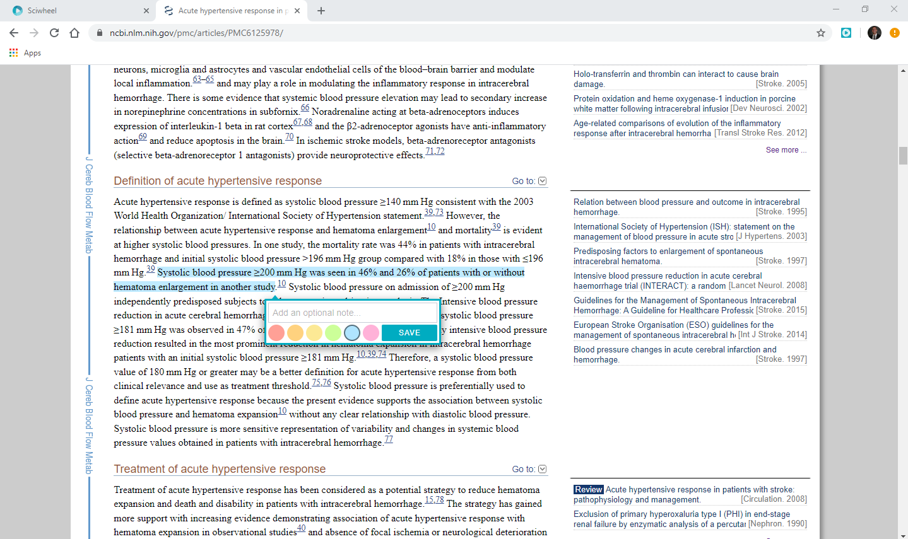
- Once you have added the paper to the appropriate folder, you can highlight pertinent features of the paper and add notes

- You can click “View in my library” to see the populated reference and PDF if available
- If, for some reason, the PDF does not auto-populate attached to the reference on your Dashboard, opening the PDF via PubMed (or any scholarly article search method) and then clicking the SciWheel extension button on Chrome will populate the PDF manually and attach it to the previous reference
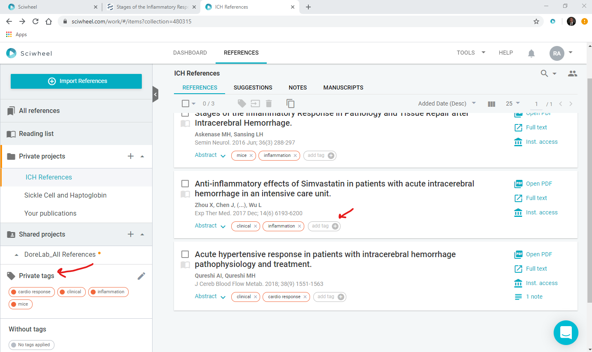
From this page - you can sort articles for a given project by tags, a helpful feature when compiling literature for a review paper and need to reference a specific aspect of a studied topic
Selecting an individual article will provide more article-specific information, such as your annotations, abstracts, related articles, and tags. The PDF can be found here as well.
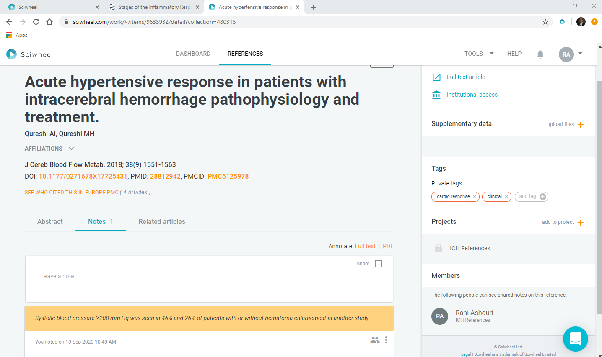
- If you are importing a reference not located via a scholarly article search engine, utilize the “Import References” on the “References” view of your project
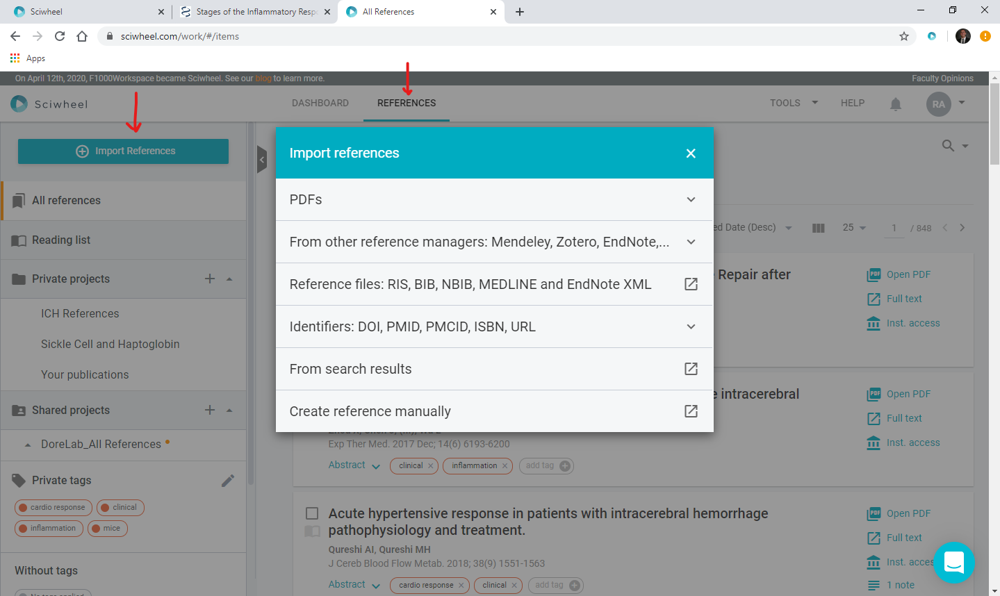
Inserting Cited References
Later in the process, once you are compiling and writing your manuscript, you will utilize the Microsoft Word Plugin to insert references gathered on Chrome
- Open your document, navigate to the Sciwheel tab of the ribbon as noted above, and sign in
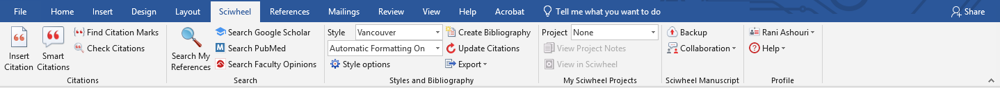
- Here you see options to insert citations, search through references, adjust the bibliography style, create a bibliography, export citations, and more.
- Be sure to select your Project from the “Project” drop-down menu in the section labeled “My Sciwheel Projects.”
- When you want to insert a citation, ensure the appropriate citation Style is selected from the drop-down menu and click the “Insert Citations” button on the left-most side of the screen
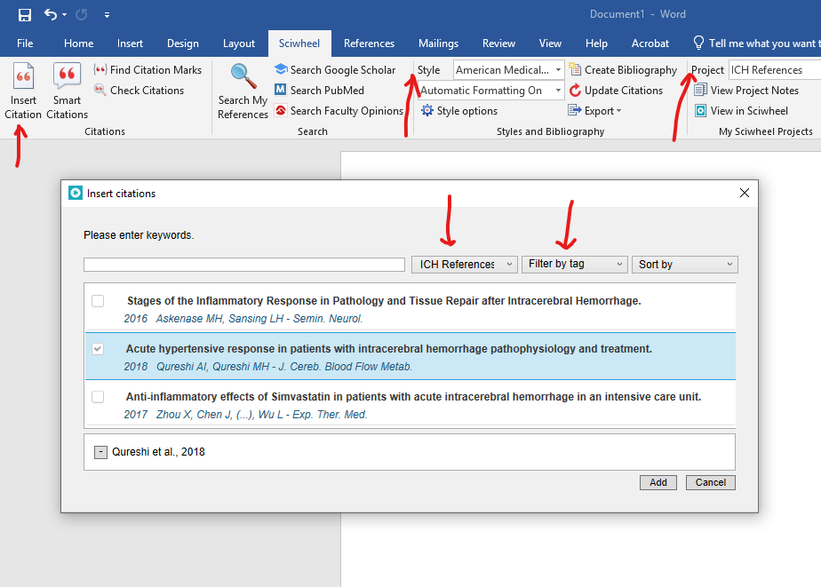
Note that here as well, you can filter by the project in addition to tags and other criteria – after selecting the references and clicking add, you will see the reference populate on the text where your cursor was
- How to merge 2+ references into the same parentheses: After inserting the first reference, move the cursor inside the parentheses where you want the following reference to populate and then insert.
- When it comes time to create your Bibliography or “References,” click the “Create Bibliography” button, and one will appear after the last page of the manuscript. Again, we use “Stroke” as our citation style.
- If citations are added after creating the bibliography, just be sure to press “Update Citations” to repopulate the bibliography 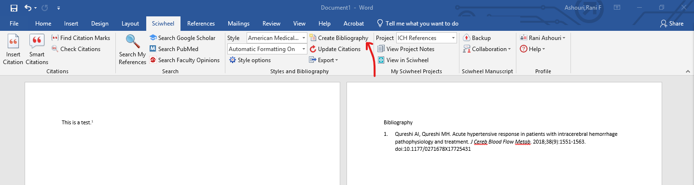
Troubleshooting
These are the basics of using Sciwheel; however, it is a very capable reference management tool. For more in-depth instruction on utilizing Sciwheel, please refer to the video guide series referenced above
If your SciWheel Google add-in is showing the “no results found” error, you must log out of all Google accounts on your computer and only log back into the Google account (ufl.edu) connected to the lab SciWheel.
Journal Club PowerPoint Presentations & Abstract/Poster Preparations
Posters
- A poster template will be provided to you in Microsoft PowerPoint format (updated 3/2022)
- You should use your title, authors, and affiliations from your paper
- All centered, title bold, authors italicized
Affiliations
- Department of Anesthesiology, Center for Translational Research in Neurodegenerative Disease, University of Florida College of Medicine, Gainesville, FL
- Departments of Neurology, Psychiatry, Pharmaceutics, and Neuroscience, McKnight Brain Institute, University of Florida College of Medicine, Gainesville, FL
Font
- Each subsection on the poster should be justified and 36-38 pt Arial font
- Condensed version of what your paper discussed for each subsection; you may move sections to allow more room where necessary
- Methods can be very condensed, do not list search terms
Acronyms/Abbreviations
- Remember to explain your work as if the reader knows nothing about it and define all acronyms/abbreviations
- Your subsection titles should be ALIGNED with one another on the left/right margin
Journal Club Presentation
- You should receive the template via e-mail from Alexandra
- Insert a SNIP of the title, date, authors, affiliations, and journal name
PowerPoint
- Save your PowerPoint with the title “2022-09-DoreS–Role of xxx in…” – in a given folder on the G-Drive so it will be less effort for everyone and easier to track down.
Figures
You will insert your figures using the original .png files at 300 dpi resolution
Using BioRender, File>Export>PNG>300 dpi (ignore licensing pop-up)
DO NOT use snip, screenshot, or compressed images as they will be blurry on the poster once printed
To increase the default resolution in PowerPoint
- Windows key + R
- Type “regedit” into the window and click OK
- Follow this path: HKEY_CURRENT_USER\14.0
- Right-click on the right panel in the empty space in the window.
- Choose New à DWORD
- Type “ExportBitmapResolution” and press enter
- Right-click this new function and choose “modify.”
- Enter 300 into the value data and check the Decimal
Turning off the file compression in PowerPoint:
- Choose File>Options (Between Help and Exit on the left)>Advanced
- Under Image size and quality, check “Do not compress images in the file.”
QR codes – references and tables
- Use https://me-qr.com to create QR codes for your references and your table (if you have an edited version)
- Create pdf files of both and upload them to this website
- If it tells you your files are too large, find an alternative QR code generator, but make sure they provide NON-EXPIRING codes!
- Insert these codes under the References subtitle and make sure they work
Editing and printing
- You will first send your poster to Dr. Doré for a round of edits
- Make changes as requested
- Get Dr. Doré’s approval on the final poster, and then it will be sent to the department for printing
- This is clearly a process that requires multiple days, which is why we ask for these posters a few weeks in advance. You must follow all deadlines given to you per lab staff!
- Once it is printed, the poster will be pinned for you at your respective symposium
How to Successfully Introduce yourself and Present your Poster
- You will need to prepare a short (~3 min) discussion of your work
- You will be required to present your poster for Dr. Doré at a lab meeting preceding the event, so be prepared.
- You should introduce yourself and the lab, introduce your work (why it’s important and what the existing literature is), what you found, and how it applies to the current population
- “My name is _______. I am an x-year undergrad student (premed or major in xxx). I have been a part of Dr. Doré NeuroICU lab at the CTRND Senter since __________, working on a literature review concerning ________________.”
- It is helpful to know your audience and what they specialize in to tailor your presentation
- USE YOUR FIGURES to explain your work
- For Posters: Do not read off of your poster!
- For Journal Club: Don’t read off your slides! There shouldn’t be that much text on your slides, anyways
- Be prepared for questions – you may not always know the answers, which is okay to admit.
- If applicable, you may want to say, “that is a great question, but I do not know the answer within the scope of my review,” or “I am not sure, but I will look into that, thank you for your question.”
Research for Credit & Program Opportunities
Some of these courses have obligations; all reports before submission should be sent to Dr. Doré for review 14 business days before the deadline)
- Sylvain Dore UFID 8151-4598
Courses
- BMS 4905 Medical Sciences Senior Research
- BSC4913 Independent Research in Bioinformatics
- ZOO4911 Undergraduate Research in Zoology
- ZOO4905 Individual Studies in Zoology
- BSC4910 Individual Mentored Research in Biology
- MCB4911 Supervised Research in Microbiology and Cell Science ALS4911 Supervised Research in Agricultural and Life Sciences PSY4911 Undergraduate Research in Psychology
- BSC4910 Individual Research in Biology
- BSC4912 Advanced Mentored Research in Biology
- EGN4912 Engineering Directed Independent Research
- CHM4910 Undergraduate Research
Contact Information
|
College |
Contact Person |
|
Course Number |
Credit |
|
Agricultural and Life Sciences |
Alan Wysocki, Associate Professor |
wysocki@ufl.edu |
XXX4911 |
0-3 |
|
Business Administration |
Renita Clark, Academic Advisor, and Career Coach |
renee.clark@warrington.ufl.edu |
GEB 4906 |
0-4 |
|
Design, Construction and Planning |
Andrew Wehle |
wehleaj@ufl.edu |
DCP4911 |
0-3 |
|
Dentistry |
Amy Davis, Admissions Coordinator |
aldavis@ufl.edu |
BMS 4905 |
1-5 |
|
Education |
Nancy Waldron, Associate Dean for Student Affairs |
waldron@coe.ufl.edu |
EDG4910 |
0-3 |
|
Engineering |
Ping Neo |
pneo@ENG.UFL.EDU |
EGN 4912 |
0-3 |
|
Arts |
Anthony Kolenic, Associate Dean, |
akolenic@arts.ufl.edu |
HUM 4912 |
0-3 |
|
Health and Human Performance |
Christopher Janelle, Professor & Interim Associate Dean for Academic and Student Affairs |
cjanelle@hhp.ufl.edu |
APK 4912 HSC 4912 HEB LEI 4912 TRSM |
0-5 |
|
Public Health and Health Professions |
Rick Kates |
kates.rick@phhp.ufl.edu |
HSC 4910 HSC 4913 HSC 4970 (Honors only) |
0-3 |
|
Journalism & Communications |
Mike Weigold Associate Dean for Undergraduate Affairs and Enrollment Management |
mweigold@gmail.com |
ADV 4910, Advertising Research Project; JOU 4910, Journalism Research Project; PUR 4910, Public Relations Research Project; and RTV 4910, Telecommunication Research Project |
0-3 |
|
Liberal Arts & Sciences |
Ata Sarajedini, Associate Dean for Natural Sciences & Mathematics |
ata@astro.ufl.edu |
XXX4911* |
0-3 |
|
Medicine |
Amy Davis, Admissions Coordinator |
aldavis@ufl.edu |
BMS 4905 |
1-5 |
|
Nursing |
Michael Weaver |
michael.weaver@ufl.edu |
NUR 4935 (Honors Students Only)
|
3 |
|
Pharmacy |
Maureen Keller-Wood |
kellerwd@COP.UFL.EDU
|
PHA 4910: Problems in Pharmaceutical Outcomes & Policy PHA 4911: Problems in Pharmacodynamics PHA 4912: Problems in Pharmaceutics PHA 4913: Problems in Medicinal Chemistry PHA 4914: Problems in Pharmacotherapy & Translational Research |
0-3 |
|
Veterinary Medicine |
Ammon B. Peck, Associate Dean for Research and Graduate Studies |
peck@ufl.edu
|
VME4906 |
1-3 |
List the opportunities for Honors
Thesis (Flavia, and Wade) to give them (Graduated with xxxx.
Submission of abstract
COM Date?
Anes Research Day: It is decided
Undergrad (October, May?>)
All of these should be added to S Dore’s CV
ADD how to register for the honor’s thesis, etc. Call me if you need more details.
Research Excellence Program for Undergraduates (REPU)
The Research Excellence Program for Undergraduates (REPU) will recognize students who have achieved significant research training during UF. Students will be responsible for registering for the program through CUR and maintaining a record of their qualifying activities through a REPU Canvas site managed by CUR. In addition, CUR will monitor the program and award graduation chords to students who complete the program requirements.
Program Requirements
Requirements and activities are distributed across five categories
- Research Preparation
- Research Experience
- Disseminating Research Results
- Reflection
- Mentoring
Categories of Activities
There are two categories of activities, Core Requirements, and Flex REPU Activities. The Core Requirements include specific activities that form the basis/backbone of preparing for undergraduate research. Flex REPU activities build on the student’s research skills and add professional development opportunities. To ensure diversity in skills and abilities, there is a maximum number of points from each research category.
This program will allow students to customize their research path. To graduate as a REPU scholar, students must complete the core requirements for 8 points, plus select an additional 42 points from the available Flex REPU points menu for a total of 50 points for qualification as a REPU scholar. The Core Requirements and Flex Activities with the point system are listed in Table 1.
Table 1: REPU Category, Task, Location, and Points List - REPU - 50 Points Required
|
Category/Task |
Location |
Points |
|
Core Requirements – 8 points |
||
|
Research Preparation |
6 |
|
|
Program Orientation |
In-Person/ Online |
1 |
|
Mentee 101 Training |
Online |
2 |
|
Responsible Conduct of Research Training |
Online |
3 |
|
Research Dissemination |
1 |
|
|
Spring Undergraduate Research Symposium |
In-Person/Virtual |
1 |
|
Research Reflection |
1 |
|
|
Research Reflection Essay |
Online |
1 |
|
Flex Activities Points – 42 required points |
||
|
Research Preparation – 3 points required, maximum of 6 points |
||
|
Research Methods or CURE Class from the approved list provided. |
In-Person/ Online |
3 |
|
Research Expo Attendance |
In-Person |
1 |
|
Fall Symposium Attendance |
In-Person |
1 |
|
Workshop Attendance (CUR) |
In-Person/ Online |
1 |
|
Training Certifications |
In-Person/ Online |
1 |
|
Tiny Talk Attendance (Attend two tiny talk presentations) |
In-Person |
1 |
|
Research Experience – 9 points required, maximum of 18 points |
||
|
Conduct mentored one-on-one undergraduate research while enrolled in a research course number for 0-3 credits per semester. Please note: To count for REPU, students must submit the REPU research form signed by the faculty mentor. |
In-Person/ Online |
3 points/semester/ 10/hrs week) |
|
Research Program (i.e., Summer REU) |
In-Person/ Online |
6 |
|
Research Dissemination – 2 points required, maximum of 10 points |
||
|
Regional or National Undergraduate Research Conference Presentation |
In-Person/ Online |
2 |
|
Regional or National Disciplinary Conference Presentation |
In-Person/ Online |
3 |
|
Publication Acceptance to Journal for Undergraduate Research |
Online |
2 |
|
Co-Author in a Peer Reviewed Journal (Pending or In-Print) |
Online |
5 |
|
Honors Thesis |
In-Person/ Online |
5 |
|
Research Reflection – 0 points required, maximum 4 points |
||
|
e-Portfolio |
Online |
4 |
|
Mentoring – 0 points required, maximum of 9 points |
||
|
Ambassador for CURBS or URSP for 1 year |
In-Person |
3 |
|
Research Mentor for 1 year |
In-Person |
3 |
|
Undergraduate Teaching Assistant for 1 semester |
In-Person |
3 |
REPU Program Management
- Advertising:
The REPU program will be advertised on the CUR website, social media channels, and listservs, as well as through all college contacts, including advising offices. Additionally, information will be advertised in UF and college newsletters and calendars. - Enrollment:
Students will enroll in REPU program through the CUR website. Enrollment into the program can occur anytime in the student’s study at the University of Florida, given that the students can complete all requirements. - Canvas Site:
Students will be enrolled in the REPU program Canvas site after completing the REPU orientation. The REPU Canvas site will be managed by the CUR office, and students will be able to monitor and submit requirements directly to this site. Requirement descriptions and forms will be available to the students at any time during their time in the program. In addition, all upcoming events will be posted on the homepage, along with submission deadlines for all event participants. When the students complete all requirements, they will be instructed to stop by the office during their graduating year for the official REPU cords.
Important Dates
- Feb 10: posters due to Anes
- Feb 13: CUR abstracts app opens
- Feb 28: COM celebration of research
- Mar 10: CUR abstracts app closes
- Mar 29: Anes celebration of research
- Apr 4: CUR research symposium